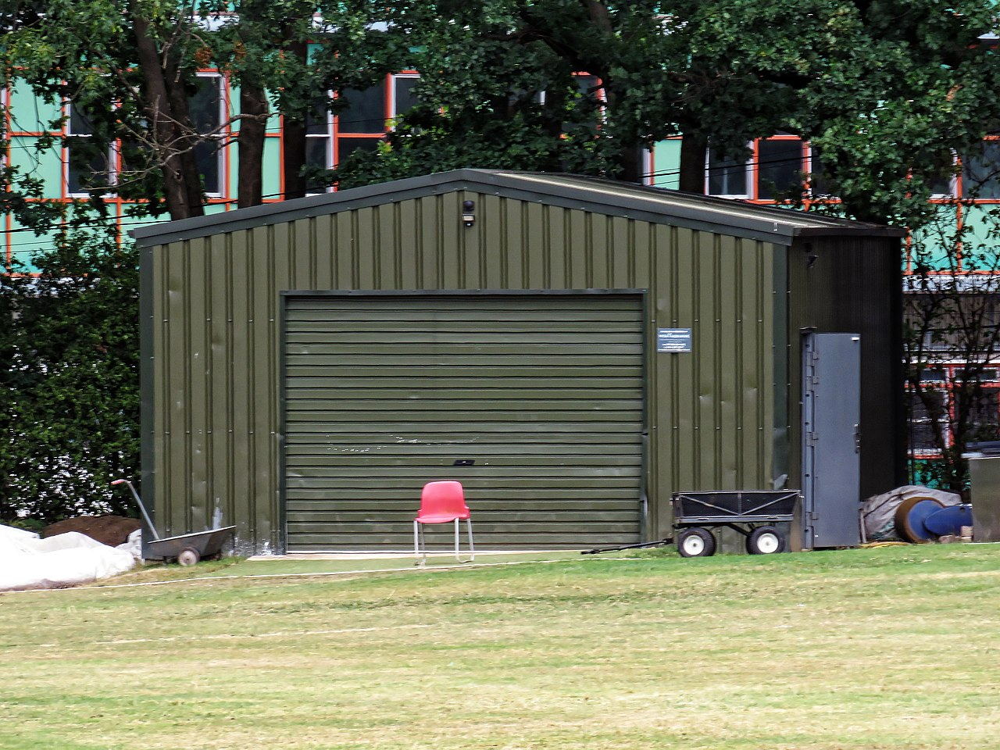

Parler de maintenance prédictive à un directeur technique, c'est prêcher un convaincu. Mais parler de maintenance prédictive à un directeur financier, c'est une toute autre affaire. Les questions fusent immédiatement : « Combien ça coûte ? Quand est-ce que ça rapporte ? Quel est le ROI ? » Et c'est parfaitement légitime. Trop de projets de maintenance conditionnelle ont échoué non pas parce que la technologie ne fonctionnait pas, mais parce que le dossier économique n'avait jamais été correctement construit. Les ingénieurs parlent en spectres FFT et en décibels — les décideurs veulent des euros et des pourcentages. Cet article comble ce fossé en fournissant un cadre financier rigoureux, basé sur des données réelles de l'industrie, pour démontrer que la maintenance conditionnelle génère un retour sur investissement mesurable en moins de douze mois.
Nous allons décortiquer les composantes exactes du coût d'un programme de maintenance conditionnelle, modéliser les économies directes et indirectes qu'il génère, présenter des cas réels chiffrés, et fournir les outils méthodologiques nécessaires pour construire un business case convaincant devant n'importe quel comité de direction.
La maintenance corrective coûte en moyenne 7 à 10 fois plus cher que la maintenance préventive planifiée. La maintenance prédictive réduit encore ces coûts de 25 à 40 % par rapport au préventif systématique.
Partie 1 : Le Coût Réel des Pannes — Chiffres Clés
Pour comprendre le ROI de la maintenance conditionnelle, il faut d'abord quantifier avec précision ce que coûte l'absence de maintenance prédictive. Les chiffres suivants sont issus d'études de l'AFNOR, du cabinet McKinsey et de la base de données du groupe SKF.
Coût Horaire d'Arrêt Non Planifié
Le coût d'une heure d'arrêt non planifié varie considérablement selon le secteur industriel. Dans l'industrie automobile, une ligne d'assemblage arrêtée coûte entre 15 000 € et 50 000 € de l'heure en perte de production directe. Dans l'industrie pétrolière et gazière, ce chiffre peut atteindre 250 000 € à 500 000 € par heure pour un train de compression ou une unité de cracking catalytique. Dans l'agroalimentaire, une ligne de remplissage aseptique immobilisée coûte environ 8 000 € à 20 000 € de l'heure, auxquels s'ajoute le coût potentiel de destruction des produits en cours de traitement.
Mais le coût d'arrêt direct n'est que la partie visible de l'iceberg. Les coûts indirects — souvent trois à cinq fois supérieurs — incluent les heures supplémentaires des équipes de maintenance appelées en urgence (majoration de 50 % à 100 %), les pièces de réchange commandées en express (surcoût de 200 % à 500 % par rapport à un approvisionnement planifié), les pénalités contractuelles de retard de livraison, et les dommages collatéraux infligés aux équipements adjacents par une défaillance catastrophique (un roulement qui grippe peut détruire un arbre de transmission à 25 000 €).
Statistiques d'Industrie
- 82 % des défaillances d'équipements sont de nature aléatoire (source : Moubray/RCM II). Le remplacement systématique basé sur le temps n'adresse que les 18 % restants.
- 30 % de la maintenance préventive systématique est réalisée trop tôt — les pièces remplacées avaient encore une durée de vie résiduelle significative (source : rapport EPRI).
- 6 à 8 % du chiffre d'affaires industriel est consacré à la maintenance. Un programme prédictif mature peut réduire ce budget de 15 à 25 %.
- Le temps moyen de réparation (MTTR) d'une panne non anticipée est 3 à 5 fois supérieur à celui d'une intervention planifiée, car le diagnostic s'effectue sous pression, les pièces ne sont pas disponibles et les procédures de consignation s'improvisent.
Partie 2 : Anatomie du Coût d'un Programme de Maintenance Conditionnelle
Un programme de maintenance conditionnelle (CBM) basé sur l'analyse vibratoire — la technique la plus mature et la plus répandue — implique des investissements dans trois catégories : le matériel, les logiciels et les ressources humaines.
Investissement Matériel
Le coût du matériel dépend directement de l'architecture choisie : collecte de données manuelle (route-based) ou capteurs permanents en ligne (online monitoring). Pour un programme route-based couvrant 200 machines, l'investissement initial comprend un collecteur de données portable (15 000 € à 35 000 €), un jeu d'accéléromètres triaxiaux industriels (3 000 € à 8 000 €), et les consommables de montage (plots magnétiques, goujons, colle industrielle pour environ 2 000 €). Pour un système en ligne avec capteurs sans fil IoT permanents, compter entre 150 € et 600 € par point de mesure, plus les passerelles de communication (800 € à 2 500 € par unité, une passerelle couvrant 20 à 50 capteurs). Sur un parc de 200 machines avec 2 points de mesure chacun, l'investissement capteurs seul représente 60 000 € à 240 000 €.
Investissement Logiciel
Les plateformes d'analyse vibratoire et de gestion CBM varient de 5 000 € par an pour des solutions SaaS d'entrée de gamme à 80 000 € par an pour des plateformes d'entreprise avec moteur d'intelligence artificielle intégré. Les solutions mid-range les plus couramment déployées dans l'industrie française (type PRÜFTECHNIK Vibguard, SKF @ptitude, ou Emerson AMS) se situent entre 15 000 € et 40 000 € annuels pour une licence couvrant 200 à 500 machines.
Investissement Humain
C'est souvent le coût le plus sous-estimé et pourtant le plus déterminant. Un analyste vibratoire certifié ISO 18436 Catégorie II (le minimum recommandé pour un programme autonome) requiert une formation de 5 jours (3 000 € à 5 000 €) plus 12 à 18 mois d'expérience pratique supervisée. Le salaire annuel brut d'un technicien CBM expérimenté en France se situe entre 38 000 € et 55 000 €. Pour un parc de 200 machines, un analyste à temps plein peut gérer la collecte et l'analyse des données si la fréquence de mesure est mensuelle. Au-delà de 400 machines ou avec une fréquence bimensuelle, un second analyste est nécessaire.

Partie 3 : Modéliser les Économies — Le Framework VDMA
Le framework développé par le VDMA (l'association allemande de l'ingénierie mécanique) propose un modèle pragmatique pour quantifier les économies générées par un programme CBM. Il repose sur quatre piliers d'économie.
Pilier 1 : Élimination des Dommages Secondaires
C'est systématiquement le poste d'économie le plus important. Quand un roulement à 50 € défaille de manière catastrophique, les billes se fragmentent, les éclats détruisent les portées d'arbre, le rotor entre en balourd violent et les paliers adjacents sont endommagés. Le coût total de réparation passe de 50 € (remplacement préventif du roulement seul) à 15 000 – 50 000 € (remplacement de l'arbre, rééquilibrage du rotor, réalignement complet). Sur un parc de 200 machines tournantes, en supposant 3 à 5 défaillances catastrophiques évitées par an grâce à la détection précoce, l'économie annuelle sur ce seul pilier se situe entre 45 000 € et 250 000 €.
Pilier 2 : Optimisation des Pièces de Réchange
La maintenance conditionnelle transforme les commandes de pièces urgentes en commandes planifiées. Le surcoût d'une commande urgente (livraison express, fabrication prioritaire, fournisseur alternatif plus cher) est typiquement de 200 % à 500 % par rapport au prix catalogue. De plus, en connaissant l'état réel des composants, les ingénieurs peuvent ajuster les stocks de sécurité au juste nécessaire, libérant du capital immobilisé. L'économie typique sur les pièces de réchange est de 15 à 30 % du budget annuel de pièces.
Pilier 3 : Réduction des Heures d'Arrêt
Une intervention planifiée est exécutée en moyenne 3 à 5 fois plus rapidement qu'une réparation d'urgence. Les raisons sont multiples : le diagnostic est déjà fait, les pièces sont pré-commandées, les procédures de consignation sont préparées, les techniciens sont mobilisés pendant les heures normales (pas à 3 h du matin), et les équipements de levage et d'outillage spéciaux sont réservés. En convertissant ne serait-ce que 10 heures d'arrêt non planifié par an en arrêts planifiés (sur un site ayant typiquement 50 à 100 heures d'arrêt non planifié annuel), et avec un coût horaire d'arrêt de 20 000 €, l'économie directe est de 200 000 €.
Pilier 4 : Optimisation Énergétique
Un moteur désaligné de seulement 0,5 mm consomme 5 à 8 % d'énergie supplémentaire par rapport à un moteur parfaitement aligné. Un roulement dégradé augmente les frottements internes de 10 à 15 %. À l'échelle d'un parc de 50 moteurs de 75 kW fonctionnant 6 000 heures par an, une amélioration de 5 % de l'efficacité énergétique représente une économie de 0,05 × 75 × 6 000 × 50 × 0,15 €/kWh = 168 750 € par an. Ce poste est souvent le plus difficile à prouver individuellement, mais il est bien documenté dans les études de l'ADEME et du programme Motor Challenge de la Commission Européenne.
Les entreprises qui mesurent rigoureusement leur ROI de maintenance prédictive constatent un rapport bénéfice/coût moyen de 10:1 à 25:1. Pour chaque euro investi dans la surveillance conditionnelle, dix à vingt-cinq euros sont économisés.
Partie 4 : Étude de Cas Chiffrée — Cimenterie de 500 000 Tonnes/An
Prenons l'exemple concret d'une cimenterie française produisant 500 000 tonnes par an, avec un chiffre d'affaires de 40 M€ et un parc de 180 machines critiques (broyeurs, fours rotatifs, ventilateurs de tirage, compresseurs, élévateurs à chaînes). Avant l'implémentation du programme CBM, le site enregistrait en moyenne 420 heures d'arrêt non planifié par an, avec un coût moyen d'arrêt estimé à 12 000 €/heure.
Investissement Année 1
- Collecteur de données portable + capteurs : 42 000 €
- Logiciel d'analyse (licence annuelle) : 22 000 €
- Formation de 2 techniciens (Cat. II ISO 18436) : 12 000 €
- Prestation de conseil externe (mise en route, 20 jours) : 30 000 €
- Montage des points de mesure (goujons, plots) : 8 000 €
Total investissement Année 1 : 114 000 €
Résultats Mesurés Année 1
- Arrêts non planifiés réduits de 420 h à 280 h (−33 %), soit 140 h × 12 000 € = 1 680 000 € d'économie directe
- 5 défaillances catastrophiques majeures évitées : 175 000 € d'économie sur les dommages secondaires
- Réduction de 18 % du budget pièces de réchange : 126 000 €
- Économie énergétique mesurée (post-alignement et équilibrage) : 45 000 €
Total économies Année 1 : 2 026 000 €
ROI Année 1 : (2 026 000 − 114 000) / 114 000 = 1 677 %
Ces chiffres, bien que spectaculaires, sont parfaitement cohérents avec les retours d'expérience publiés par SKF, Emerson et le Department of Energy américain (DOE/GO-102010-3170). Le facteur clé est que la cimenterie partait d'une situation particulièrement dégradée avec un taux d'arrêt non planifié élevé. Pour un site déjà mature en maintenance préventive systématique, le ROI en Année 1 serait plus modeste (300 à 800 %) mais toujours extrêmement attractif.
Partie 5 : Les Pièges à Éviter dans le Calcul du ROI
Piège 1 : Compter les Pannes Évitées Comme des Certitudes
Quand le système détecte un défaut de bague extérieure sur un roulement et que l'équipe remplace le composant avant la défaillance, il est tentant de dire « nous avons évité un arrêt de 48 heures à 12 000 €/h, soit 576 000 € d'économie ». Mais c'est une surestimation. Le roulement aurait peut-être survécu encore 6 semaines. L'arrêt aurait peut-être duré 12 heures et non 48. La pratique industrielle recommande d'utiliser un coefficient de probabilité conservateur de 0,5 à 0,7 pour pondérer les économies liées aux pannes évitées.
Piège 2 : Ignorer le Coût de la Non-Action
Certains systèmes CBM génèrent des alertes qui ne sont jamais suivies d'action corrective — soit parce que le planning de production ne permet pas l'arrêt, soit parce que les pièces ne sont pas disponibles. Un système qui détecte mais ne corrige pas ne génère aucun ROI. Il est essentiel d'inclure dans le budget la capacité d'intervention rapide : stock de pièces critiques, créneaux de maintenance planifiée sanctuarisés dans le planning de production.
Piège 3 : Sous-Estimer la Courbe d'Apprentissage
Les trois à six premiers mois d'un programme CBM produisent généralement peu de résultats probants. Les baselines vibratoires sont en cours de constitution, les analystes apprennent les signatures spécifiques de chaque machine, les faux positifs sont fréquents. Le ROI réel se manifeste à partir du mois 6 à 9 et s'accélère considérablement en Année 2 et Année 3, lorsque la base de données historique est suffisamment riche pour que les algorithmes de tendance et de détection automatique fonctionnent efficacement.
Partie 6 : Construire un Business Case Convaincant
Pour obtenir le feu vert budgétaire, le business case doit parler la langue du comité de direction. Voici les éléments structurels indispensables.
Quantifier le « Coût de l'Inaction »
Commencer par documenter les 5 à 10 défaillances les plus coûteuses survenues dans les 24 derniers mois. Pour chacune, détailler : durée d'arrêt, coût de réparation (main d'œuvre + pièces), coût de production perdue, pénalités contractuelles éventuelles. Totaliser ces coûts. Ce chiffre constitue le « terrain de jeu » — c'est-à-dire le montant maximum théoriquement récupérable par un programme CBM. Appliquer un taux de capture conservateur de 40 à 60 % pour obtenir l'économie projetée réalisté.
Présenter Trois Scénarios
- Scénario pessimiste : ROI de 3:1 en Année 1 (capture de seulement 20 % du terrain de jeu)
- Scénario réalisté : ROI de 10:1 en Année 1 (capture de 40 %)
- Scénario optimiste : ROI de 20:1 en Année 1 (capture de 60 %)
Même le scénario pessimiste doit démontrer un payback en moins de 12 mois. Si ce n'est pas le cas, le périmètre du programme est probablement trop large par rapport au nombre de machines réellement critiques.
Ancrer sur un Cas Emblématique
Identifier la « machine à un million d'euros » — celle dont la défaillance aurait les conséquences les plus dévastatrices pour le site. Construire le dossier économique autour de cette unique machine d'abord. Si le ROI est prouvé sur un seul équipement critique, l'extension du programme au reste du parc devient une formalité.
La maintenance conditionnelle n'est pas un centre de coût. C'est un investissement dont le retour est parmi les plus élevés de toute l'ingénierie industrielle. Avec un cadre méthodologique rigoureux, des données de terrain fiables et un business case structuré, tout responsable de maintenance peut démontrer à sa direction que chaque euro investi dans la surveillance des machines en rapporte dix, vingt, voire vingt-cinq. Le temps du « ça coûte trop cher » est révolu. Désormais, la seule question légitime est : « Combien nous coûte le fait de ne PAS le faire ? »